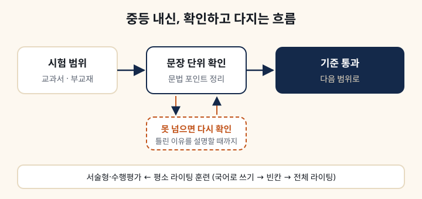

왜 시험 기간만은 안 받나요?
평소의 확인 학습이 쌓여야 시험에서 점수로 이어지기 때문입니다. 내신은 범위가 정해져 있습니다. 그래서 얼마나 많이 봤는지보다 빠짐없이 확인했는지가 점수를 가릅니다.
시험이 다가오면 학교와 학년에 맞춰 확인 범위를 조정합니다. 시험 기간의 자세한 운영은 상담 때 안내드립니다. 상담에서 학교와 학년, 최근 시험 결과를 알려 주시면 더 정확하게 안내드릴 수 있습니다. 수업 정보는 중·고등 내신반 안내에 있습니다.
내신은 본문 외우기인가요?
외우기보다 확인입니다. 교과서와 부교재의 시험 범위를 문장 단위로 확인하고, 애매하게 아는 문장을 남기지 않는 것을 목표로 합니다. 시험에 나오는 문법 포인트를 정리하고, 틀린 문제는 이유를 설명할 수 있을 때까지 다시 확인합니다.
서술형은 평소 라이팅 훈련으로 대비합니다. 정확한 문장을 쓰는 연습을 이어 가고, 그 연습이 서술형에서 그대로 힘이 됩니다. 고등학생도 같은 방식으로 학교 시험 범위를 문장 단위로 확인합니다.
기초가 약한 중학생은 낮은 단계부터 하나요?
네. 저희 교재는 학년이 아니라 씨앗·잎사귀·꽃·열매 4단계로 올라가고, 단계는 나이가 아니라 학생 상태로 정합니다. 중학생이어도 씨앗부터 다시 시작하는 경우가 있습니다. 그게 결국 더 빠릅니다. 씨앗은 초등 4~6학년에 해당하는 단계로, 짧은 글을 소리 내어 읽는 리딩 교재로 시작합니다.
상담에서는 쓰던 교재와 공부한 것을 함께 보고 4단계 중 어디서 시작할지 안내드립니다. 레벨테스트는 등록 후 첫날 수업에서 보고, 교재 단계는 첫 수업 뒤에 정해 구매 링크를 보내 드립니다. 교재와 단계는 커리큘럼·교재 안내에 정리해 두었습니다.
라이팅과 수행평가도 보나요?
네. 수행평가 트레이닝 교재가 따로 있습니다. 국어로 쓰기, 빈칸, 전체 라이팅 순서로 올라갑니다. 쓴 것은 문장 단위로 첨삭하고, 학교 수행평가에서 점수로 이어지게 하는 것이 목표입니다. 이 교재는 잎사귀(중2)와 열매(중3 심화) 단계에 들어 있습니다.
이런 경우엔 안 맞습니다
시험 기간에만 짧게 맡기려는 경우입니다. 저희 중등부는 그 방식을 받지 않습니다. 진도를 빨리 빼 주기를 바라는 경우도 맞지 않습니다. 저희는 4단계 교재를 학년이 아니라 상태로 올리고, 기준을 넘지 못하면 다음으로 넘어가지 않는 체킹 중심 수업이라, 처음 몇 달은 학생이 힘들어할 수도 있습니다.
고등 내신반은 월·수·금 160분·410,000원으로 정해진 중등 내신반과 달리 학년과 과정에 따라 반을 따로 편성하고, 수강료도 상담 때 안내드립니다. 고등학생이라면 시간표와 교습비를 상담에서 확인하신 뒤, 그 시간이 학교 일정과 맞는지로 정하시면 됩니다. 상담 때 물어볼 것은 상담 때 무엇을 물어봐야 하는지에 모아 두었습니다.